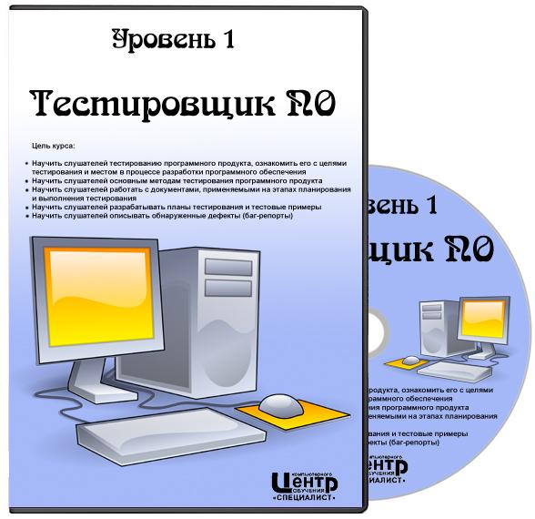

Тестировщик ПО. Уровень 1

Видеокурс: Тестировщик ПО. Уровень 1
Год выпуска: 2011
Язык: русский
Автор: Специалист
Описание:
Сверхнадежное программное обеспечение - мечта любого программиста и пользователя. Без работы специалиста по тестированию невозможен выпуск ни одного программного продукта. От его функционирования может зависеть успех бизнеса, работа финансовых или промышленных компаний. В рамках курса по тестированию ПО Вы научитесь разрабатывать тестовые планы (TestPlan) и тестовые примеры (TestCase), выполнять тестирование в соответствии с заранее подготовленным тестовым планом, обнаруживать ошибки при выполнении тестирования и документировать их, оценивать и тестировать программный продукт с точки зрения функциональности.
Видео №?1
Видео №?2
Видео №?3
Видео №?4
Видео №?5
Видео №?6
Модуль 1. Введение в тестирование программного обеспечения. Анализ требований к программному обеспечению. Жизненный цикл разработки программного обеспечения. Цели и задачи процесса тестирования. Основные понятия. Полный цикл тестирования. Фазы тестирования. Описание ролей участников группы тестирования. Особенности требований к программному обеспечению. Анализ требований с точки зрения пригодности к тестированию. Составление тестов на основе требований. Оценка рисков требований, ранжирование тестов. Изменение требований в процессе разработки.
Модуль 2. Методы и виды тестирования. Методы тестирования: стеклянный ящик; черный ящик; тестирование моделей; анализ программного кода (инспекции). Виды тестирования: функциональное тестирование; регрессионное тестирование; тестирование безопасности; тестирование производительности; тестирование удобства использования.
Модуль 3. Тестовая документация (общие сведения). Тестовая документация (Test Plan). Документы, создаваемые в ходе жизненного цикла проекта. Тестовые требования. Тестовые планы (Test Plan). Подготовка наборов тестовых данных (Test Case). Отчет о прохождении тестов. Отчеты о проблемах (баг-репорты). Связь тестовых планов с другими типами документов. Возможные формы подготовки тестовых планов. Сценарии. Таблицы. Конечные автоматы. Генераторы тестов.
Модуль 4. Тестовая документация (Test Case). Тестовая документация (отчет о прохождении тестов). Определение Test Case. Правила написания, степень детализации, независимость. Подготовка тестовых данных, подходы и проблемы. Ведение документации. Связь отчета о прохождении теста с другими документами. Возможные формы представления отчета о прохождении теста. Автоматическое и ручное тестирование. Ведение системы отслеживания ошибок (багтрекинговые системы). Правила составления описаний ошибок, понятие приоритета, критичности. Составление отчетов по результатам тестирования.
Модуль 5. Классы данных для тестовых примеров. Проверка на граничных значениях и робастности. Допустимые данные. Граничные данные. Отсутствие данных. Повторный ввод данных. Неверные данные. Реинициализация системы. Устойчивость системы. Нештатные состояния среды выполнения. Проверка на граничных значениях. Проверка робастности. Проверка нулевого значения.
Модуль 6. Классы эквивалентности. Тестирование операций сравнения. Покрытие программного кода. Класс эквивалентности меньше, чем диапазон. Класс эквивалентности внутри диапазон. Класс эквивалентности больше, чем диапазон. Тестирование операции сравнения. Понятие покрытия. Уровни покрытия. Покрытие по строкам программного кода. Уменьшение количества тестовых примеров. Анализ покрытия.
Модуль 7. Тестирование функциональности программного обеспечения. Функциональные требования, предъявляемые к системе. Тестовые требования, соответствующие функциональным требованиям. Тестовые примеры, соответствующие тестовым требованиям.
Модуль 8. Тестирование объектно-ориентированного программного обеспечения. Процедурное и объектно-ориентированное программирование. Пример тестирования системы. Поэлементное тестирование классов.
Модуль 9. Тестирование пользовательского интерфейса (GUI). Задачи и цели тестирования пользовательского интерфейса. Функциональное тестирование пользовательского интерфейса. Тестирование удобства пользовательского интерфейса.
Модуль 10. Особенности тестирования различного типа приложений. Регрессионное тестирование. Тестирование Web-приложений. Цели и задачи регрессионного тестирования. Виды регрессионного тестирования. Управляемое регрессионное тестирование.
Цель курса: Научить слушателей тестированию программного продукта, ознакомить его с целями тестирования и местом в процессе разработки программного обеспечения Научить слушателей основным методам тестирования программного продукта Научить слушателей работать с документами, применяемыми на этапах планирования и выполнения тестирования Научить слушателей разрабатывать планы тестирования и тестовые примеры Научить слушателей описывать обнаруженные дефекты (баг-репорты)
В первую очередь курс будет интересен тестировщикам программного обеспечения, программистам.
По окончании курса Вы будете уметь: Владеть терминологией Понимать процесс тестирования программного обеспечения и жизненный цикл программного продукта Разрабатывать тестовые планы (Test Plan) и тестовые примеры (Test Case) Выполнять тестирование в соответствии с заранее подготовленным тестовым планом Обнаруживать ошибки при выполнении тестирования и документировать их Оценивать и тестировать программный продукт с точки зрения функциональности
Жанр: Программное обеспечение Продолжительность: 24:35:59
Файл: Формат: mkv Видео: MPEG4 Video (H264) 1024x768 4fps Аудио: AAC 44100Hz mono Размер: 1.1 Gb
Дополнительная информация:
...
Университет
University
Новости / News
Задания / Quests
Программы / Soft
Студенты / Students
Книги / Books
Карта / Maps
Ссылки / Links
Тестирование
Testing
Видео уроки / Video lessons
Книги / Books
Программирование
Programming
Programming language C++
Programming language C#
Programming language Java
Programming language JaveScript
Programming language ActiveScript
Programming language VB .NET
Programming language PHP
Programming language Assembler
Programming language Pascal
Development with Unity3D
Development with Eclipse
University
Новости / News
Задания / Quests
Программы / Soft
Студенты / Students
Книги / Books
Карта / Maps
Ссылки / Links
Тестирование
Testing
Видео уроки / Video lessons
Книги / Books
Программирование
Programming
Programming language C++
Programming language C#
Programming language Java
Programming language JaveScript
Programming language ActiveScript
Programming language VB .NET
Programming language PHP
Programming language Assembler
Programming language Pascal
Development with Unity3D
Development with Eclipse